Motion Sensor - PIR¶
High Performance Option¶
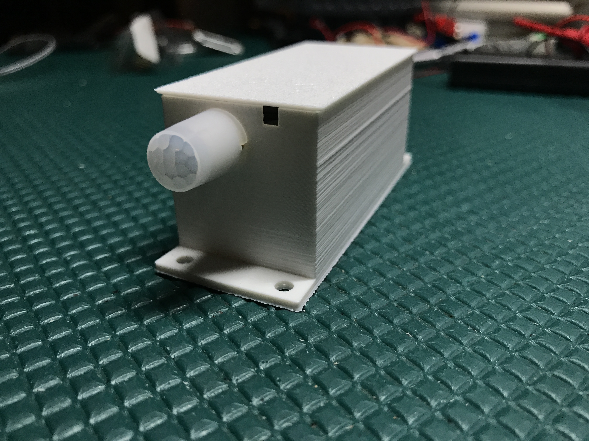Looking for a simple PIR motion sensor? This is not cheap, but is very high performance and when you pair it up with the trigBoard, the average current is about ~3uA!!! That is insanely low for an always on PIR Motion sensor. This is a genuine Panasonic EKMB1201111 sensor,
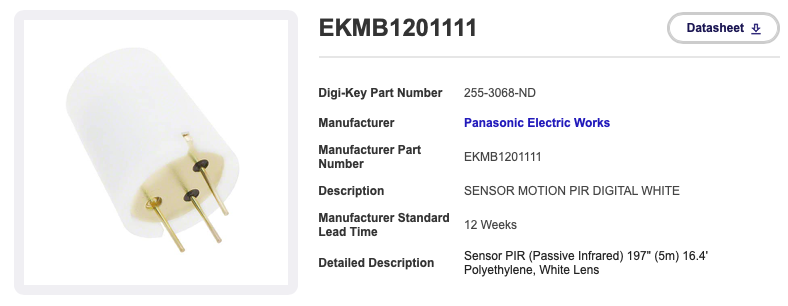Believe it or not, but they do have lower power versions available, but for the cost, the 2uA version is good enough:
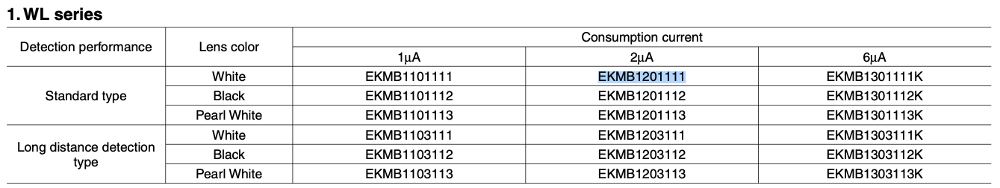Wiring is a piece of cake, just need to run an extra wire over to ground. Be careful with polarity - it does matter! Match it up with the markings on trigBoard + goes to VDD and - to OUT, the wire over to the ground pin.
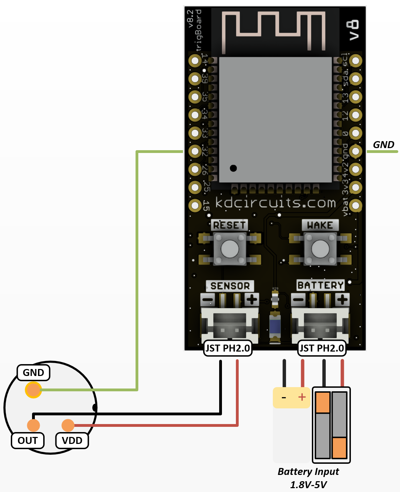I was then able to poke holes through the 3D printed case to make everything fit in a nice compact solution:
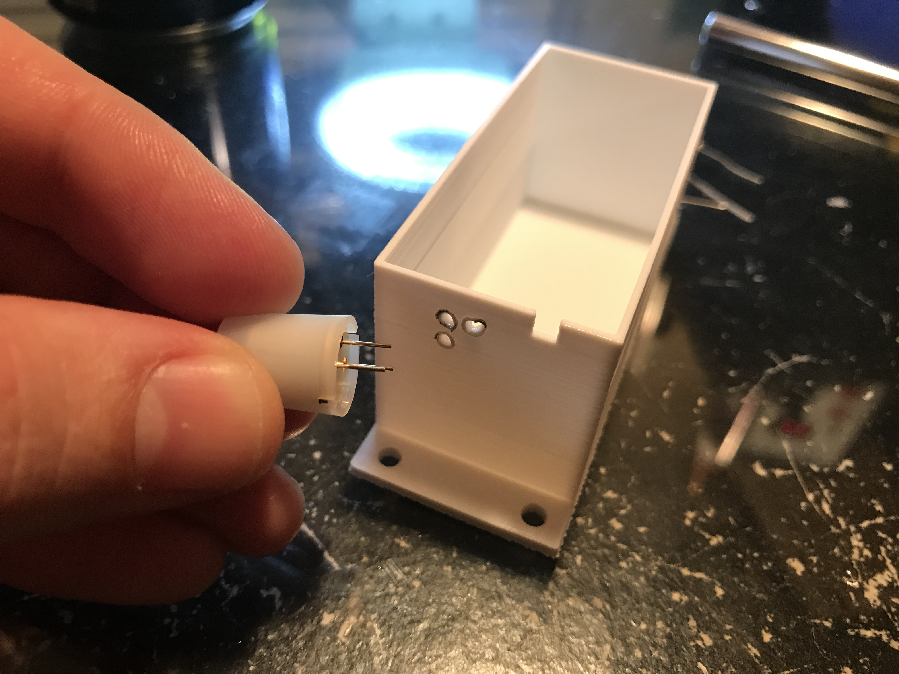 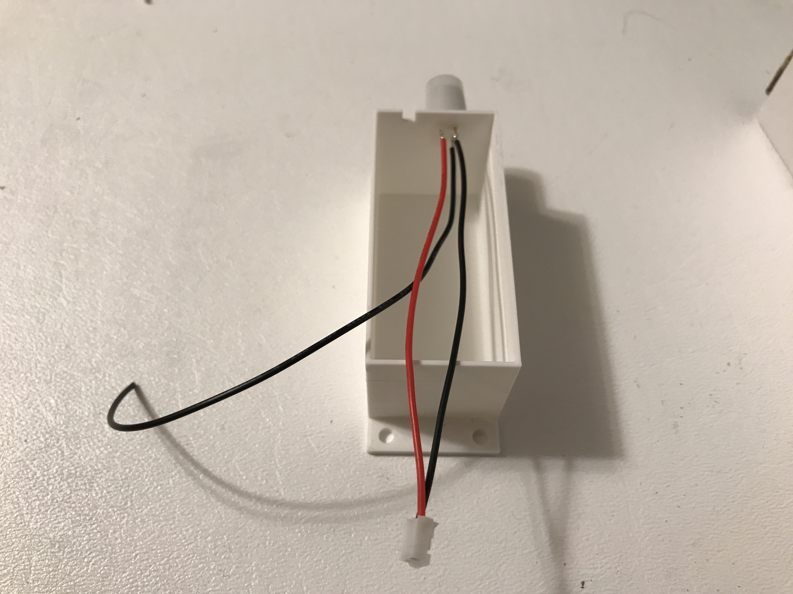 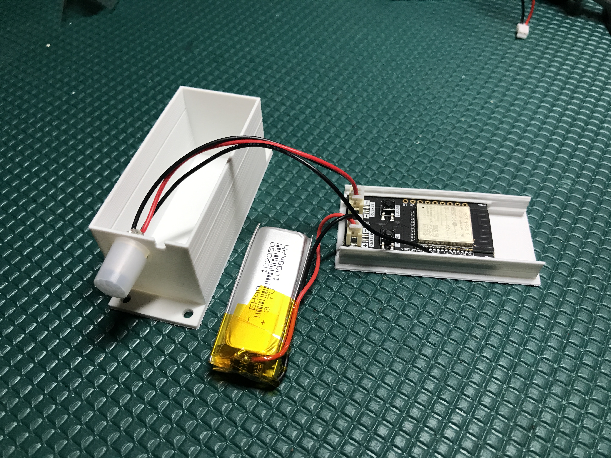 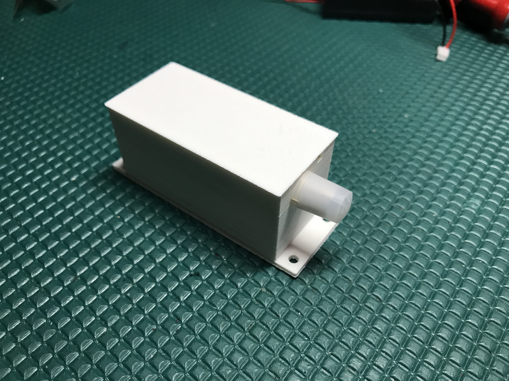Then no coding is needed! The base firmware will work out of the box here, so just set the message for when the contact closes to whatever you want and you’re good to go!
Cheaper Option¶
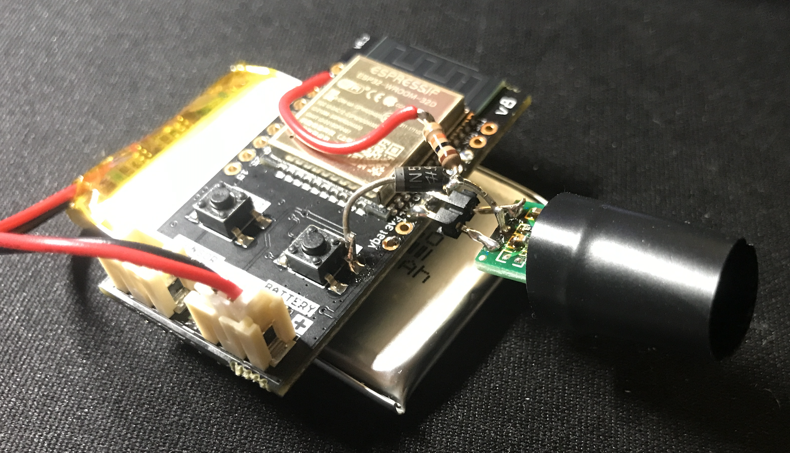This option uses a cheaper PIR sensor that you can get from Amazon. Note that it’s going to pull about 12uA, so that’s still pretty good, just not as good as 2uA… Also note that this option requires some external circuitry and new code to be loaded. This is because this PIR sensor output does not fully swing to the Vin. The message that is used though is for the Wake Button. This is because the sensor shares this same wake source. Due to this, some special connections and code are needed.
The motion sensor is based on the AM312 and only pulls like 12uA - bought on amazon
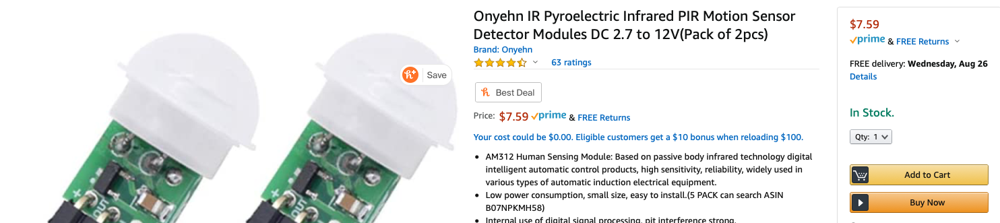You’ll also need a Schottky diode and 10k resistor. The connection will need to be made directly to the same pad shared by the wake button:
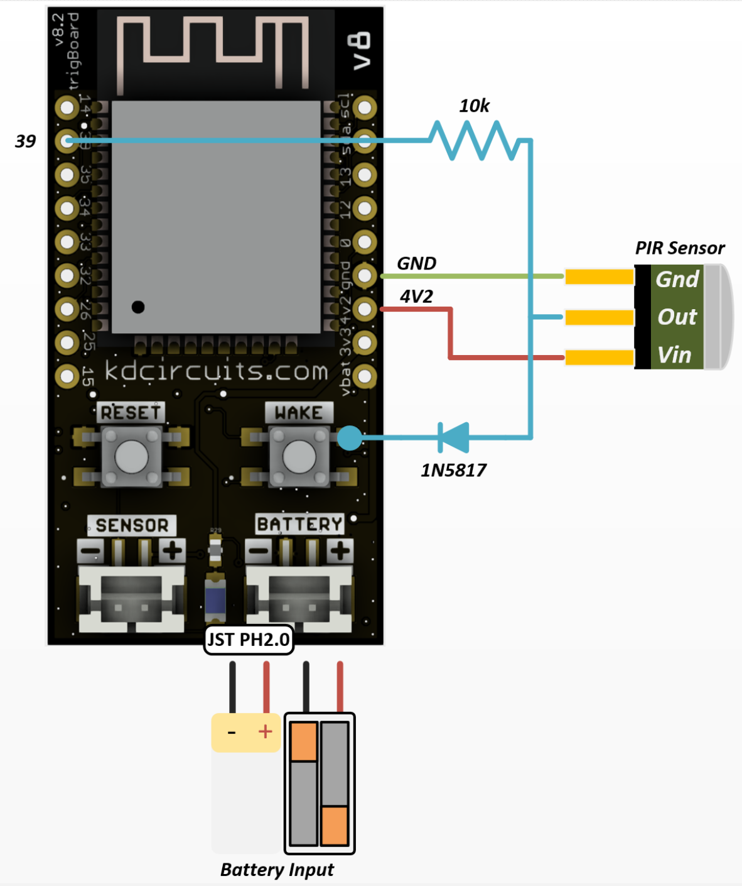Warning
In the past I have ran into issues with these PIR sensors randomly triggering… so far with this setup after running for a long time along a stairwell getting triggered multiple times a day, I have had no issues. Here is fix if you do ever run into strange false triggers.
Theory of Operation¶
The PIR Sensor shares this trigger with the wake button input, which is totally fine and in fact, you could also add a normal contact to this is as well - then it becomes a door/window sensor and motion sensor! or even a water detector/motion sensor? That would be pretty cool!
Sharing this trigger is fine, but that means if we do use the wake button, the message is the same as the PIR trigger… no big deal. The wake button pulls that pin HIGH to 4.2V, which is why we have that diode in there. The PIR only drives up to ~1V or so. That’s plenty to wake the board up, but without the diode you would damage the PIR anytime you pressed the wake button. The code linked above is special because it monitors GPIO39 to see if it’s HIGH, then it knows this is a PIR wake, not from the button. BUT, this is only 1V or so, so I actually have to analogRead this pin, and also just wait for it to go back low before going to sleep again:
while (analogRead(PIRpin) > 500) { //wait for PIR to settle
int PIRread = analogRead(PIRpin);
Serial.println(PIRread);
delay(10);
}